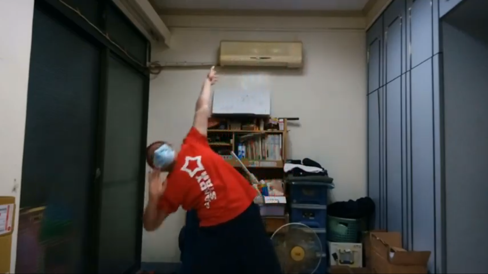

ThunderSnake 雷蛇
教學影片
目前最常見的技連，練會這玩法就可以玩5成以上的歌XD
基本上結構對就能玩，也有許多變形技，像是USA等等。
歌曲範例:badapple, only my rail gun
DraguSpear 龍矛
教學影片
現在單獨打的機會除了自己call外很少出現，大部分的時間會是打龍矛的銜接技Astrogation。
第二八拍的第3.4拍比較難看懂，其實只要順順的擺過去就行。
歌曲範例: rising hope, 前前前世
電波蛇(あまね式)
教學影片原本的電波蛇玩法現在有點少見了，大部分還是玩あまね式，不過能套用的歌偏少，另一種比較常出現的變形是伊賀蛇。
歌曲範例: Over The Future, 甲賀忍法帖(打伊賀蛇)